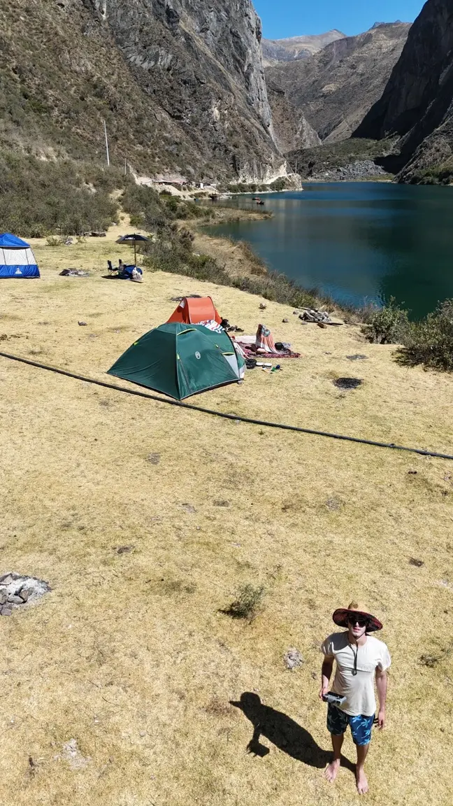
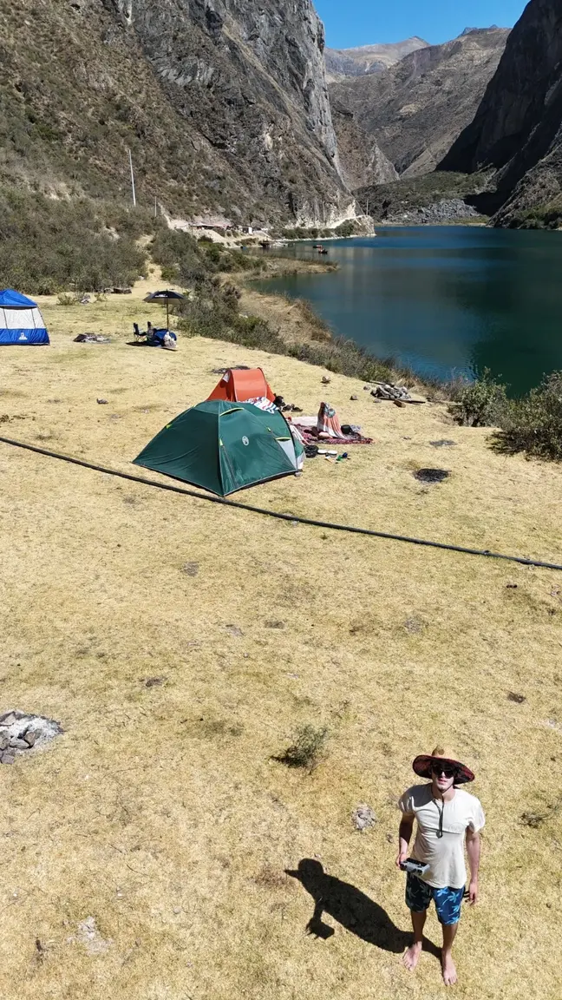

I'm a Software Developer and Business Analyst with a strong foundation in finance, data analysis, and automation. I build web tools and dashboards that help turn data into clear, actionable insights. I work comfortably with Python, HTML, CSS, SQL, and JavaScript, and I also rely heavily on tools like Excel and Power BI to explore data, create reports, and solve real business problems. I enjoy creating end-to-end solutions, from backend logic to frontend experiences.
I've always been drawn to the way technology can simplify work, solve meaningful problems and unlock better decision-making. Whether it's automating workflows, optimizing decision-making, or improving user experiences, I'm always looking for innovative ways to leverage tech for good. Outside of work, I'm passionate about nature, the outdoors, and physical challenges — from snowboarding and surfing to hiking, camping, and flying my drone. It's where I recharge, find inspiration, and test my limits in a different way. I’m also deeply interested in history, geography, and geopolitics, which fuel my curiosity about how the world works — both past and present — and help me see patterns and context in complex systems.
International Business graduate from the University of Lima, ranked in the upper fifth of my class with a specialization in International Finance. Proficient in data analysis using Excel, Power BI, and SQL, with strong skills in HTML, CSS, and Python, and a solid understanding of JavaScript. Fluent in both English and Spanish, I am an organized, proactive, and fast-learning individual with a passion for combining finance, data, and technology to solve real-world problems and drive meaningful impact.
 



Python, SQL, HTML & CSS, JavaScript (basic)
Full stack development, dashboard creation, data analytics.
MS Excel, Power BI, Pivot Tables & Formulas
Interactive dashboards, data cleaning, performance tracking.
Technical Analysis, Fundamental Analysis
Equity screening, trend analysis, portfolio evaluation.
Business Planning, Startup Operations, Process Optimization
Hands-on experience starting and managing small businesses, with exposure to startup workflows and real-world business development.
English – Fluent, Spanish – Fluent
Bilingual professional for cross-cultural communication.
Organized, Proactive, Responsible, Fast Learner
Adaptable, detail-oriented, always curious to improve.
June 2024 – Present
Lima, PeruDec 2023 - March 2024, Dec 2024 – March 2025
Utah, USAApril 2024 – Dec 2024
Lima, PeruDec 2021 – Dec 2023
Lima, PeruAug 2018 - July 2024
Lima, PeruGraduated in the upper fifth with an average grade of 15.6/20.
HubSpot SEO (2024), Kaggle Python (2023), Kaggle Intro to Programming (2023), Google Analytics (2023).

A responsive commercial website for the Machu Pouches brand. Built with a focus on user experience, it features product showcases and a clean, modern design to attract customers.
Here are a few moments captured with my DJI Mini 4 Pro drone and Insta360 X4 camera. They keep me inspired, balanced, and connected to what matters. Enjoy!


Feel free to reach out for any inquiries or opportunities.